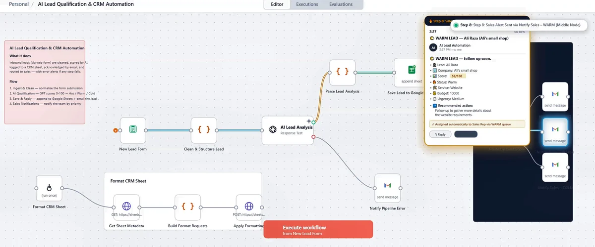

Workflow automation · Built and documented
AI Lead Qualification & CRM Automation
An n8n workflow that receives web-form leads, normalizes incoming data, uses an OpenAI model to assign a Hot, Warm, or Cold priority, records the result in Google Sheets, sends an acknowledgement email, and notifies the team according to lead priority.
My contribution: I designed and configured the workflow steps and the connections between the form, OpenAI, Google Sheets, and Gmail.
Outcome: A repeatable lead-triage process with a central spreadsheet record and priority-based notifications.
How it works
- Ingest and clean. A new form submission is normalized.
- Qualify with AI. A GPT model scores the lead and labels it Hot, Warm, or Cold.
- Save and reply. The lead is added to Google Sheets and receives an email.
- Notify sales. The team is alerted according to lead priority.